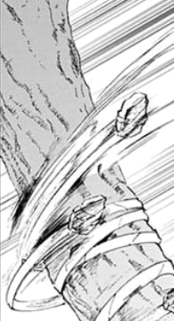
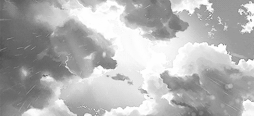

You look within your satchel and find enough rope to reach the other side. Searching the grass, you find a long stick and craft it into a hanger.
The land on the other side is lower than the ground you were standing on. You connect the rope to a sturdy tree and you throw it as far as possible beyond the cliff so it wraps around another tree.
A memory pops out. You remember Nicholas used to teach you how to do a lot of things - one of it was this one. He always used to come over when you were young, but one day, he just stopped. You ask mother but she just says he'll be back soon. It's been 3 years.
You zoom across the cliff to the other side then enter the forest. In a small cleared area, a droplet touches your clothes and you look up - its raining. It was the first time you've experienced it and you take off your stuffy hoodie to feel the water touching your skin.
Something rustles and slightly growls in the bushes. Still taking in the feeling, you decide to ignore it and move forward in the opening. In the distance, something starts taking shape.
However, you remember mother told you to stay on the path - to follow the white Chrysanthemum flowers. You try to spot one far way and you do.
Should you rush in its direction or continue to the shallow figure?